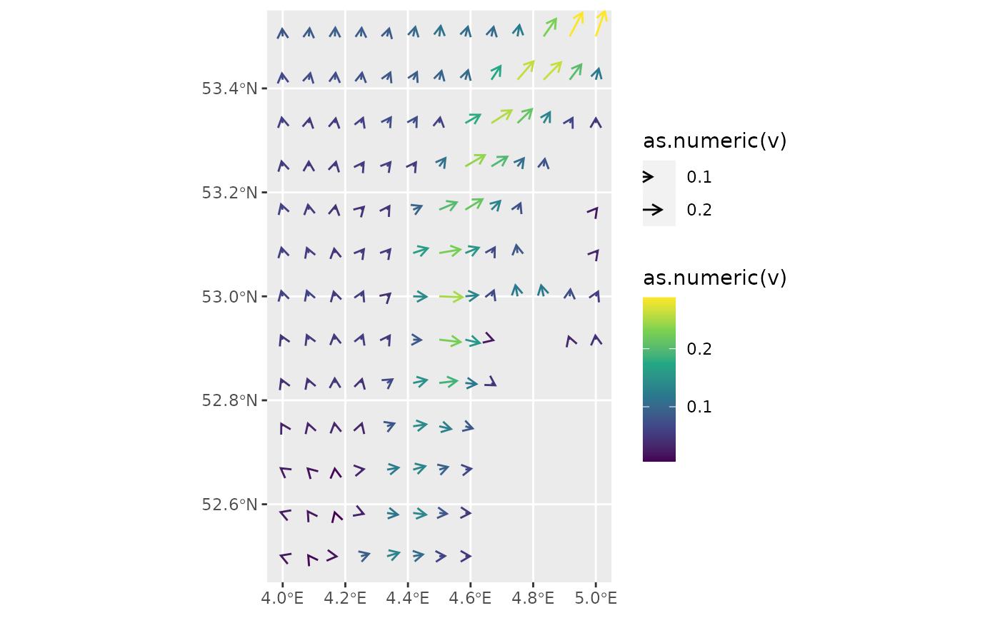

Visualise vector fields (such as, electric/magnetic fields, wind speed, or water currents) with arrows as a layer in a ggplot.
Arguments
- mapping
Set of aesthetic mappings created by
aes(). If specified andinherit.aes = TRUE(the default), it is combined with the default mapping at the top level of the plot. You must supplymappingif there is no plot mapping.- data
Can be one of four things:
NULL: in that case data from the parent ggplot call is inherited.data.frame: you need to assign thexandyaesthetics.sf object: it should contain a
geometrycolumn with onlyPOINTgeometries.stars object: it will be converted automatically to an
sfobject.
- stat
The statistical transformation to use on the data for this layer. By default it is set to
GeomFields()("fields").- position
Position adjustment, either as a string naming the adjustment (e.g.
"jitter"to useposition_jitter), or the result of a call to a position adjustment function. Use the latter if you need to change the settings of the adjustment.- na.rm
If
FALSE, the default, missing values are removed with a warning. IfTRUE, missing values are silently removed.- show.legend
logical. Should this layer be included in the legends?
NA, the default, includes if any aesthetics are mapped.FALSEnever includes, andTRUEalways includes. It can also be a named logical vector to finely select the aesthetics to display.- max_radius
Maximum radius to which the
radiusaesthetic is scaled in the plot. You can use absolute ("e.g., "cm", "in", "pt") and relative ("npc") units to set its value. Default is0.5 cm.- .angle_correction
Function to correct the angle in the aesthetics for the projection and/or aspect ratio used in the plot. When set to
NULLthe angle is not corrected and is treated as the angle in the final plot. A custom function can be provided which should accept at least three arguments (data,panel_paramsandcoord). Seeangle_correction()andvignette("angle_correction")for more details.- arrow
specification for arrow heads, as created by
grid::arrow().- inherit.aes
If
FALSE, overrides the default aesthetics, rather than combining with them. This is most useful for helper functions that define both data and aesthetics and shouldn't inherit behaviour from the default plot specification, e.g.borders().- ...
Other arguments passed on to
layer(). These are often aesthetics, used to set an aesthetic to a fixed value, likecolour = "red"orsize = 3. They may also be parameters to the paired geom/stat.
Details
Adds a layer with vector fields to a ggplot. In order to achieve this
two special aesthetic are required: radius and angle.
Aesthetics
geometry|x: Either ageometrycolumn orxcoordinate. In case ofgeometrythe column should be of class sf::sfc_POINT. In case ofx, it should be anumericvector, and the aestheticyneeds to be specified as well. It specifies the location of the origin of each vector.radius: This aesthetic will be used to scale the radius of the vector arrows in the field you wish to display. The maximum radius of the arrows is given by parametermax_radius. Seevignette("radius_aes")for more details.angle: This aesthetic represent the angles of the vectors in your field in radians. Contrary to the mathematical definition, an angle of 0 radians will point upwards (instead of to the right). This was chosen such because in most geographical applications an angle of zero degrees points Northwards. Before plotting these angles are corrected by the function passed to the.angle_correctionargument. Seevignette("angle_corrections)for more details.y: This aesthetic needs to be used in combination with thexaesthetic. It needs to be anumericvector.fill: Seevignette("ggplot2-specs", "ggplot2")colour: Seevignette("ggplot2-specs", "ggplot2")linetype: Seevignette("ggplot2-specs", "ggplot2")linewidth: Seevignette("ggplot2-specs", "ggplot2")alpha: A variable to control the opacity of an element.
Examples
data(seawatervelocity)
if (requireNamespace("ggplot2") && requireNamespace("stars") &&
requireNamespace("scales")) {
library(ggplot2)
library(stars)
sw_df <- as.data.frame(seawatervelocity)
ggplot(sw_df, aes(x = x, y = y, radius = as.numeric(v), angle = as.numeric(angle))) +
geom_fields(max_radius = unit(0.5, "cm"), na.rm = TRUE)
ggplot() +
geom_fields(data = seawatervelocity,
mapping = aes(radius = as.numeric(v),
angle = as.numeric(angle),
col = as.numeric(v)),
max_radius = unit(0.5, "cm")) +
scale_colour_viridis_c()
}
